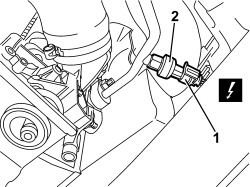

5040B14 AIR CONDITIONING SYSTEM MULTISTAGE PRESSURE SWITCH - R+R
- Path
- Procedures > 50 AUXILIARY UNITS > 5040 AIR CONDITIONING CASING AND COMPONENTS > 5040B SYSTEM SAFETY CONTROL DEVICES > 5040B14 AIR CONDITIONING SYSTEM MULTISTAGE PRESSURE SWITCH - R+R
- Kind
- repair procedure (removal / refitting; the operation number is the code)
- Applies to
- all engines; all production periods
- Interactive page
- https://sloeber94.github.io/elrnDB-aBrrSpdr/en/#/946002271
Applies to: all engines; all production periods
 Removing
Removing
 Refitting
RefittingOp. 7055B54 UNDER ENGINE PROTECTION/GUARD - R.R.
1. Working under the right front side of the vehicle, disconnect the electrical connection for the linear pressure switch.
Description | Component |
|---|---|
LINEAR SENSOR FOR FANS |
2. Undo the linear pressure switch and remove it.

Applies to: all engines; all production periods
Refitting
Removing- Check that the linear pressure switch is not damaged.
- Tighten the linear pressure switch in position.
Component | Fastening | dia | Value (daNm) | Validity |
|---|---|---|---|---|
LINEAR PRESSURE SWITCH | 0.8 |
- Connect the electrical connection.
Topics linked from this page (2)
Topics that link to this page (12)
- L010 CLIMATE CONTROL NOT COOLING
- 5040A81 PIPE FROM EXPANSION VALVE TO CONDENSER AND COMPRESSOR FILLING R R
- E5020 ENGINE COOLING - WIRING DIAGRAM
- E5020 ENGINE COOLING - COMPONENT LOCATION
- E5020 ENGINE COOLING - WIRING DIAGRAM
- E5020 ENGINE COOLING - COMPONENT LOCATION
- E5020 ENGINE COOLING - WIRING DIAGRAM
- E5020 ENGINE COOLING - COMPONENT LOCATION
- E6021 COMPRESSOR ENGAGEMENT - WIRING DIAGRAM
- E6021 COMPRESSOR ENGAGEMENT - COMPONENT LOCATION
- E6021 COMPRESSOR ENGAGEMENT - WIRING DIAGRAM
- E6021 COMPRESSOR ENGAGEMENT - COMPONENT LOCATION